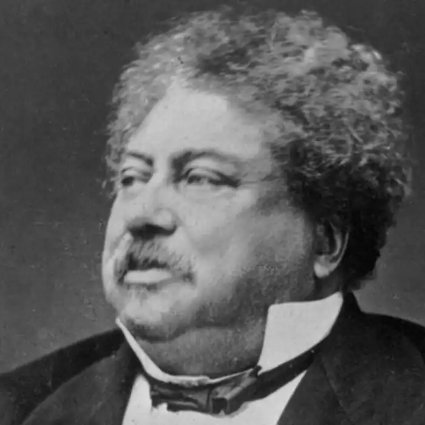
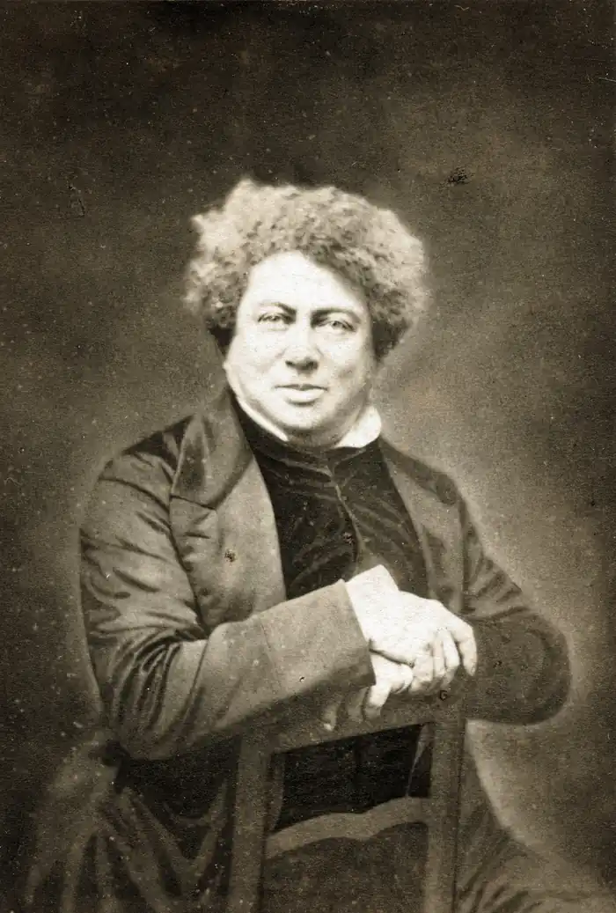
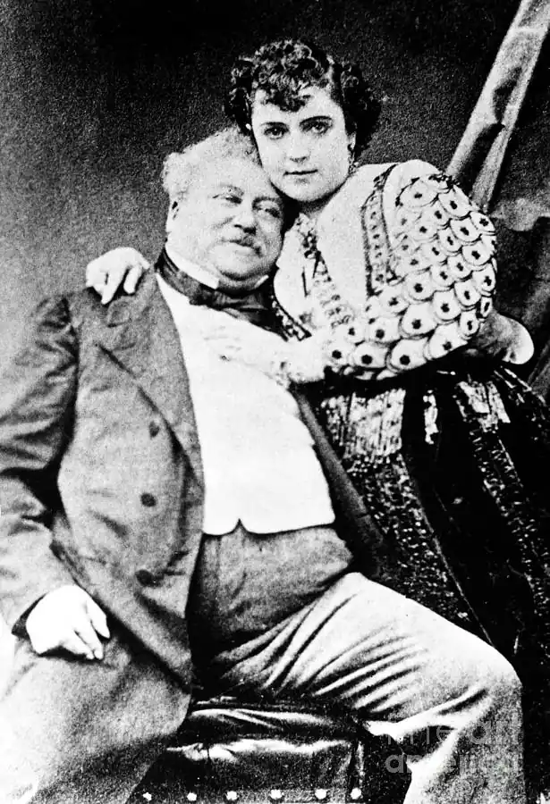

ДЮМА, Александр (Дюма-батько; Dumas, Alexandre — 24.07.1802, Віллер-Котре — 05.12.1870, м. Пюї) — французький письменник.Народився в сім'ї дивізійного генерала Александра Дюма-Даві де ла Пайєтрі та Марі-Луїзи Лабуре. Батько майбутнього письменника — республіканець — був сином Антуана-Александра Даві, маркіза де ла Пайєтрі і чорношкірої рабині з прізвищем Дюма, яке прибрав собі юний мулат, вербуючись в драгунський полк. Це прізвище залишив собі майбутній письменник, котрий обожнював свого батька — сильного, гарного і мужнього чоловіка, котрий здійснив чимало подвигів, але потрапив у немилість до імператора.
Дитячі роки і юність Дюма провів у Вілле-Котре, з яким його пов'язували найкращі спогади.У 1823 р. Дюма, в гонитві за щастям, приїхав у Париж і, влаштувавшись у канцелярії герцога Орлеанського, дізнався від І. Лассаня, свого колеги, котрий публікувався у газеті і писав водевілі, про літературне життя столиці. Розповіді Лассаня захопили юного Дюма, і він вирішив присвятити себе літературній кар'єрі. Перш ніж взятись за ремесло письменника, юнак почав багато й уважно читати. Список творів, з якими неодмінно треба було ознайомитися, склав для Дюма той самий Лассань.
Залишилася лише одна проблема — потрібно було обрати жанр, і ним стала драма. Можливо, тут також відіграла свою роль дружба з Лассанем, а також притаманне тому часові загальне захоплення театром, і особливо інтерес Дюма до "Гамлета", якого він бачив у виконанні англійських акторів. Першим твором Дюма, підписаним Даві (за прізвищем батька і діда Даві де ла Пайєтрі), був одноактний водевіль "Полювання і кохання" ("La chasse et l'amour"), поставлений 22 вересня 1825 p. в Амбігю і написаний у співавторстві з П. Ж. Руссо й А. де Левеном. Питання про вибір жанру поставало перед Дюма багато разів. Цим і пояснюються творчі пошуки Дюма, котрий писав драматичні твори, історичні хроніки, вірші, оповідання, романи. Данину драматургії Дюма віддав у юні роки, які співпали з періодом становлення романтизму на сценах Парижа. Палкий прихильник нового напряму в мистецтві, саме Дюма став автором першої романтичної історичної драми, яка з тріумфом пройшла на французькій сцені, — "Генріх III і його двір" ("Henri III et sa cour", 1829). У п'єсі щохвилини відбуваються незвичайні події. Спочатку глядачі потрапляють в кабінет астролога Руджері, де Катерина Медічі, матір короля Генріха III, планує, як з допомогою короля знешкодити свого суперника герцога де Гіза. Пізніше у тому самому кабінеті новий фаворит короля Сен-Мегрен зізнається у коханні герцогині де Гіз. Через хвилину тут відбувається таємна зустріч членів Ліги на чолі з де Гізом, котрий сподівається, ставши вождем Ліги, змінити короля. Нарешті, тут же після наради де Гіз знаходить хусточку герцогині, здогадується про її зв'язок із Сен-Мегреном і вирішує помститись. Дюма не прагне до історичної правди у зображенні вчинків героїв, а прагне реалістично зобразити речі, реалізуючи цим принцип романтичного історизму. Для нього важлива не певна дія, а дієвість, завдяки якій весь світ історичних реалій рухається, постає як живий. П'єси Дюма йшли одна за одною: 30 березня 1830 р. — "Христина" ("Christine") — в Одеоні; 3 травня 1831 р. в Порт Сен-Мартене — "Антоні" ("Antony"), яку вважають також першою драмою Франції про сучасну людину; 20 жовтня 1831р.— "Карл VIIу своїх васалів" ("Charles VII chez les grands vassaux") — в Одеоні; 10 грудня 1831 p. — "Річард Дарлінгтон" ("Richard Darlington") — в Порт Сен-Мартені та ін. Драми Дюма проклали шлях романтичній драмі В. Гюґо. Незабаром Дюма відчув, що йому стає тісно в рамках драми. Питання про те, де знайти себе, постало перед ним уже на початку 30-х pp. У номері "Огляд двох світів" ("La Revue de Deux mondes") від 15 грудня 1831 p. він опублікував три історичні оповідання, які були прихильно зустрінуті читачами. Цей успіх наштовхнув Дюма на думку серйозно зайнятися історичною прозою. Звернувшись до жанру роману, Дюма переніс у нього все найкраще, що було в його драмі. Це і жваві діалоги, і захоплюючий сюжет, і чітка та струнка композиція. Водночас у роман Дюма перейшов і властивий його драмі мелодраматизм. Улюблені Дюма елементи мелодрами залишаються у більшості його романів: фатальні таємниці, афектація почуттів і емоційна насиченість мовлення персонажів, небезпеки, які на кожному кроці підстерігають героїв. Один із найбільш насичених мелодраматичними елементами романів Дюма — "Дві Діани" ("Les Deux Diane", співавт. Меріс, 1846—1847). Тут є і таємниці, і невинна героїня — жертва підлих інтриг, і зловісний "дует" — Діана де Пуатьє і коннетабль Монморансі, і комічний слуга Мартен-Герр, і шляхетний та великодушний (щоправда, не завжди) герцог Гіз. Завершується роман типовою для романтичної мелодрами трагічною розв'язкою. Однак тонкий аналіз психологічного стану головного героя, глибина і серйозність основних проблем, що постають у романі, переростають рамки звичайної мелодрами. Елементи мелодраматизації наявні і у відомому романі Дюма "Три мушкетери" ("Les Trois Mousquetaires", співавт. О. Маке, 1844).У романі "Три мушкетери" втілені нове бачення дійсності та історії, характерне для письменника першої половини 40-х років. Якщо раніше його цікавила епоха, то тепер у всіх епохах він шукає яскраву особистість. У "Трьох мушкетерах" ми зустрічаємо ряд героїв, які в наступних романах трилогії "Через двадцять років" ("Vingt Ans apres", співавт. Маке, 1845) і "Віконт де Бражелон" ("Le Vicomte de Brage-lonne", співавт. Маке, 1848) потраплять у нову епоху. Історичні обставини змінюються, герої залишаються. Якщо у "Генріху III" герої були наче не на своїх місцях, то у "Трьох мушкетерах" — навпаки. Намагаючись впливати на політику, ні Рішельє, ні королева, ні будь-хто інший не прагне зайняти місце короля, а той, у свою чергу, не намагається зосередити всю владу у своїх руках, погроза кардинала залишити пост першого міністра лякає його. Важливо, що Дюма підкреслює цінність особистості як такої, поза знаннями і титулами. Автор зупиняє нашу увагу на думці про примарність цілей, людських прагнень — слави, почестей, кар'єри. Усе життя головного героя — Д'Артаньяна — це сходинки до вищих військових чинів. Невипадково у кінці кожної з книг трилогії автор говорить про те, чого досягнув відважний гасконець на даному етапі. Наприкінці "Трьох мушкетерів" терорі вписує своє ім'я в патент на отримання лейтенантського чину. "Через двадцять років" завершується повідомленням про призначення Д'Артаньяна капітаном королівських мушкетерів. І, нарешті, у фіналі трилогії приходить звістка про його загибель на полі бою в чині маршала. Кар'єра зроблена, але чи щасливий герой? Дюма навмисно пориває з героєм у ту мить, коли той стає маршалом. Вручаючи Д'Артаньяну давно заслужену нагороду лише перед смертю, письменник підкреслює всю марнотність гонитви за славою та багатством. Знаменно, що Дюма значну увагу приділяє життю і поведінці героя у певний проміжок часу. Для нього важлива мить життя і те, як проявляє себе герой у цю мить. Герої роману наче залишаються без минулого та майбутнього, вони живуть тільки зараз і тут. Мить життя максимально насичується, оскільки вона і є найвищою цінністю. Слід також зауважити, що світ героїв дуже тісний: де б не перебували мушкетери, в Парижі, на півдні чи на півночі Франції, навіть в Англії, — скрізь вони зустрічають то міледі, то кардинала, то короля. Логіка миті примушує Дюма зіштовхувати своїх героїв у різних ситуаціях, розігрувати різні комбінації і уважно слідкувати за правдоподібністю розв'язок з урахуванням винятковості своїх героїв. Герої Дюма діяльні, від них віє енергією, оптимізмом, надлишком сил, святковістю. Вони розцінюють кожний момент свого життя як неповторний і живуть з такою повнотою та віддачею, що не можуть не захопити читача. Ця особливість творів Дюма — звичайне продовження особливостей характеру самого письменника. Усі сучасники відзначали незвичайне життєлюбство і життєрадісність Дюма. Людина щедрої душі, він завжди любив бути в оточенні друзів, для котрих умів пожертвувати багато чим. Однак друзі, а точніше ті, кого Дюма вважав такими, уміло користувалися його безкорисливістю і великодушністю. Ставши одним із найпопулярніших письменників Франції, Дюма заробляв до двохсот тисяч франків золотом на рік, але через власне марнотратство та спритність "друзів" і "подруг", котрі безсовісно жили за його рахунок, він закінчив життя у бідності, і отримав можливість достойно вмерти лише завдяки сину — теж письменнику — Александру Дюма-молодшому, котрий взяв на себе клопотання про батька. Надзвичайно популярним у широкого загалу став роман Дюма "Граф Монте-Крісто" ("Le Comte Monte-Cristo", співавт. Маке, 1845-1846). "Граф Монте-Крісто " теж написаний в жанрі роману-фейлетону, що обумовило насиченість сюжету і напруженість інтриги. Доля Едмона Дантеса — героя роману, поламана і скалічена підлими, низькими людьми. Ув'язнений у неприступному замку Іф, Дантес довгі роки страждає від самотності. Лише завдяки випадку він знайомиться з іншим в'язнем — абатом Фаріа. Добра, мудра і вольова людина, абат пояснює Дантесу причину його бідувань, допомагає втекти з в'язниці, залишає у спадок величезний скарб, схований у потаємному місці. Ставши багатим і впливовим, Дантес під іменем Монте-Крісто з'являється в Парижі, щоби відімстити всім, хто винен у його нещастях. Поштовхом для створення образу Дантеса стала реальна історія молодого шевця Франсуа Піко. Звичайний швець під пером Дюма перетворився у графа Монте-Крісто — вольову, рішучу людину. Змінився характер героя — а, отже, змінились і способи, які він обирає для покарання пороку. Піко просто вбиває своїх ворогів, керуючись при цьому лише невситимою жагою помсти. Піко — нехай і не зовсім звичайний, але все ж убивця. Дантес — романтик, шляхетний герой. Він не лише мстить конкретним людям — через них він карає порок. Закономірний і фінал незвичайної історії, що лежить в основі сюжету роману, — осліплений ненавистю Піко врешті-решт сам гине від рук месника. Іншу долю приготував Дюма своєму герою Едмону Дантесу: усвідомивши безвихідь шляху, яким він йшов, граф Монте-Крісто покидає рідні береги без надії на щастя і душевний спокій.